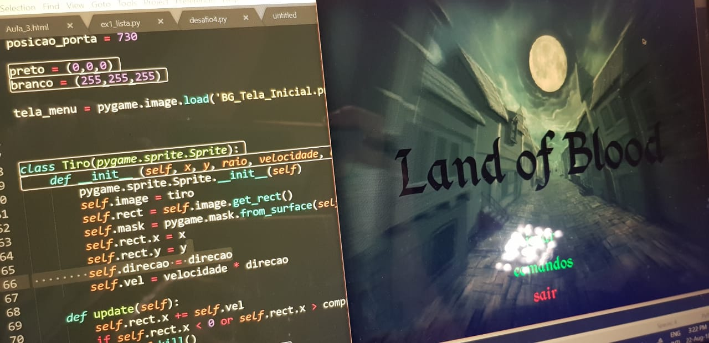

Design de software
O que é?
Esta matéria consiste em ensinar e desenvolver a linguagem de programação Python, instruindo os alunos à como aplicar os conhecimentos adquiridos em aula à projetos visando a inovação. Esse curso é aplicado durante o primeiro semestre para as três Engenharias e conta com tanto a participação de professores muito capacitados quanto o auxílio de veteranos experientes nas matérias que se volutariam para ajudar aqueles com dúvida.

Como é o Projeto Final de Design de Software?
Como atividade de conclusão de curso, os alunos de Engenharia devem optar pela criação de um aplicativo ou um jogo e apresenta-los em uma feira aberta ao público para que seus trabalhos possam ser contemplados por seus professores, colegas e familiares. Ao optar pela realização de um aplicativo, os alunos devem identificar um público alvo e sua necessidade e desenvolver uma plataforma que atenda e resolva seus desejos (ou que melhore algum serviço já existente). Optando pelo jogo, os estudantes devem explorar a biblioteca do python, "PYGAME", e elaborar um programa por conta própria. Através disso, eles tem a possibilidade de liberar sua criatividade e, se baseando em jogos já existentes, elaborando um jogo único.